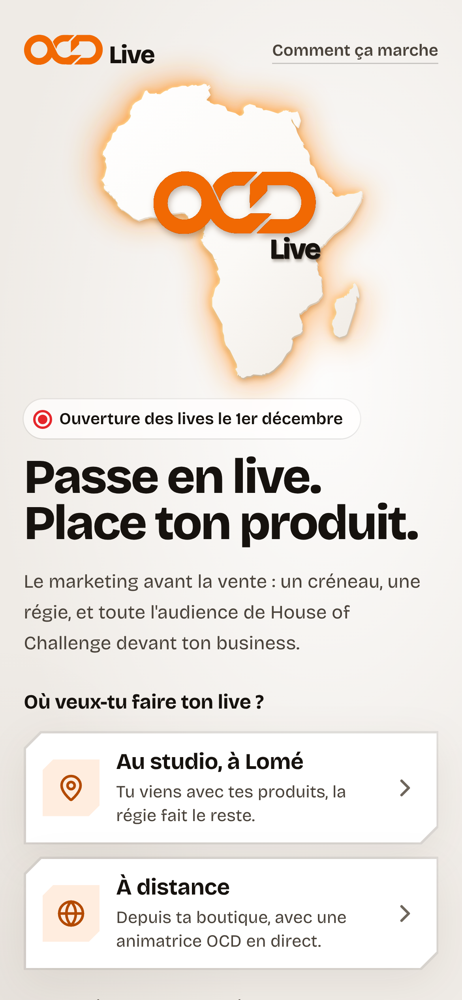
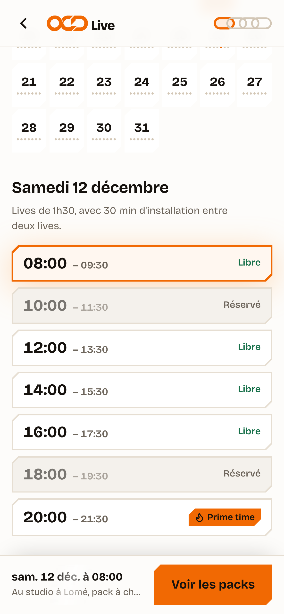
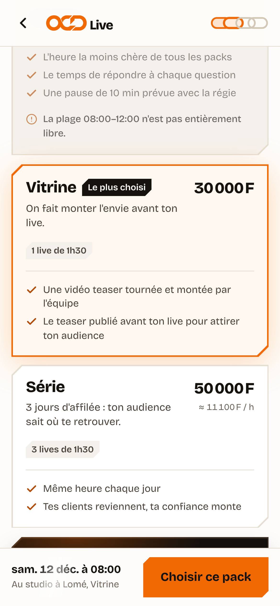
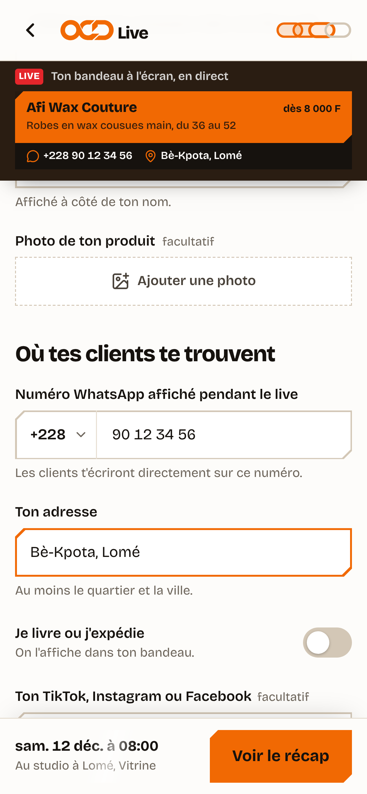
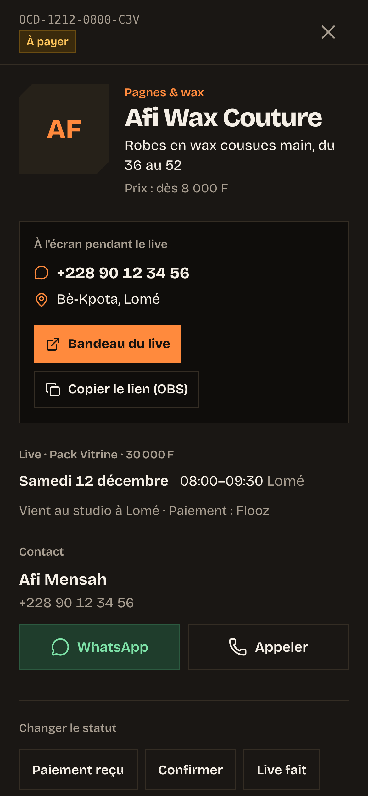

Samedi, 9h, à Bè.
Afi a cousu
40 robes.
@afi.wax.coutureRobes en wax, du 36 au 52
3vues
Personne
ne la voit.
Il lui faut
une vitrine.

Elle réserve un live.
1. La scèneAu studio, à Lomé
2. Le jourSamedi 12 · 8h00
3. Le packVitrine
4. À l'écran pendant le liveSon numéro



House of Challengeavec Afi Wax Couture
LIVE 3kafui.tgelle existe en bleu ?
mamie_237vous livrez à Kara ?
sena_bje prends la rouge
Afi Wax Couturedès 8 000 FRobes en wax cousues main, du 36 au 52
WhatsApp +228 90 12 34 56Bè-Kpota, Lomé
WhatsApp · +228 97 ·· ·· 14
Bonjour, la rouge en 44 est dispo ?
WhatsApp · +228 92 ·· ·· 80
Je viens la chercher à Bè ce soir
Et chez OCD…
OCD Live · Régie · maintenant
Nouvelle réservation · OCD-1212-0800
Afi Mensah (Afi Wax Couture, pagnes & wax) a réservé le samedi 12 décembre de 8h00 à 9h30 et viendra au studio à Lomé.

Le marketing
avant la vente.
ocd-pi.vercel.app
Réserve ton live · dès 15 000 F